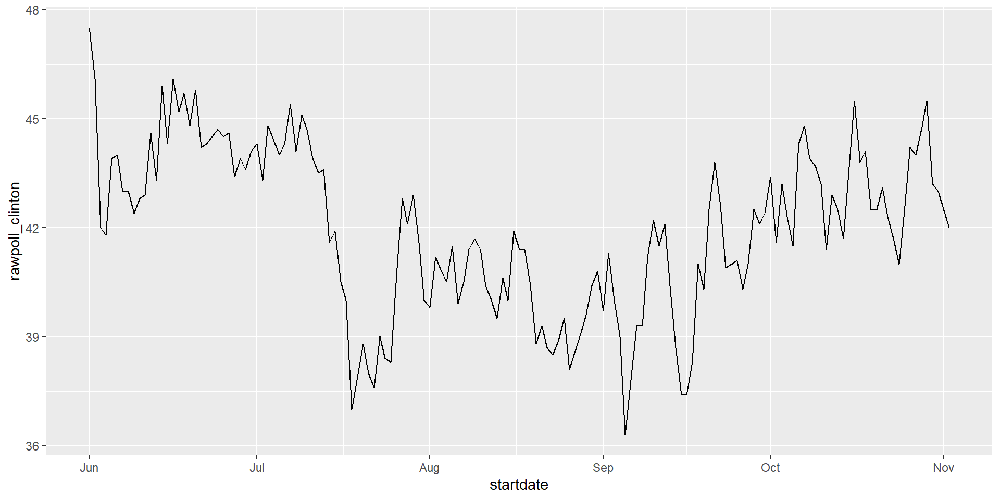
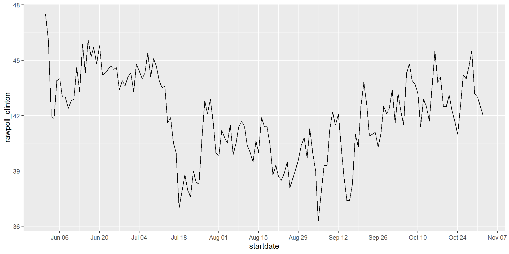
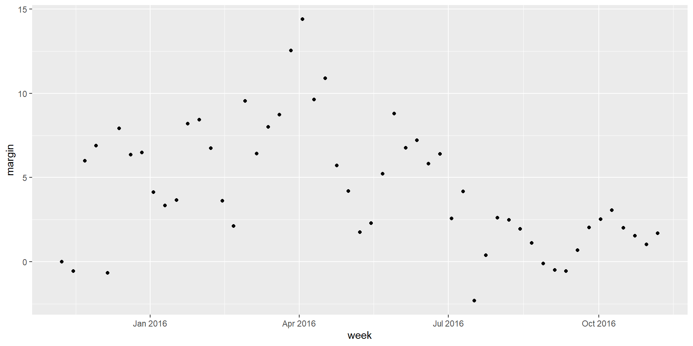

library(tidyverse)
library(dslabs)
polls_us_election_2016$startdate |> head() [1] "2016-11-03" "2016-11-01" "2016-11-02" "2016-11-04" "2016-11-03"
[6] "2016-11-03"Wrangling
We have described three main types of vectors: numeric, character, and logical.
we often encounter variables that are dates.
Although we can represent a date with a string, for example November 2, 2017, once we pick a reference day, referred to as the epoch, they can be converted to numbers by calculating the number of days since the epoch.
In R and Unix, epoch = January 1, 1970.
If I tell you it’s November 2, 2017, you know what this means immediately.
If I tell you it’s day 17204, you will be quite confused.
Similar problems arise with times and even more complications can appear due to time zones.
For this reason, R defines a data type just for dates and times.
library(tidyverse)
library(dslabs)
polls_us_election_2016$startdate |> head() [1] "2016-11-03" "2016-11-01" "2016-11-02" "2016-11-04" "2016-11-03"
[6] "2016-11-03"class(polls_us_election_2016$startdate) [1] "Date"as.numeric(polls_us_election_2016$startdate) |> head() [1] 17108 17106 17107 17109 17108 17108as.Date converts characters into dates.
So to see that the epoch is day 0 we can type
as.Date("1970-01-01") |> as.numeric() [1] 0polls_us_election_2016 |>
filter(startdate >= make_date(2016, 6, 1)) |> #2026-06-01
filter(pollster == "Ipsos" & state == "U.S.") |>
ggplot(aes(startdate, rawpoll_clinton)) +
geom_line() 
polls_us_election_2016 |>
filter(startdate >= make_date(2016, 6, 1)) |>
filter(pollster == "Ipsos" & state == "U.S.") |>
ggplot(aes(startdate, rawpoll_clinton)) +
geom_line() +
scale_x_date(date_breaks = "2 weeks", date_labels = "%b %d") +
geom_vline(xintercept = as.Date("2016-10-28"), linetype = "dashed")%b: abbreviated month (Jan, Feb)d: day of month (01-31)
library(lubridate) set.seed(2002)
dates <- sample(polls_us_election_2016$startdate, 10) |> sort()
# default replace = FALSE
dates [1] "2016-05-31" "2016-08-08" "2016-08-19" "2016-09-22" "2016-09-27"
[6] "2016-10-12" "2016-10-24" "2016-10-26" "2016-10-29" "2016-10-30"year, month and day extract those values:tibble(date = dates, month = month(dates), day = day(dates), year = year(dates)) # A tibble: 10 × 4
date month day year
<date> <dbl> <int> <dbl>
1 2016-05-31 5 31 2016
2 2016-08-08 8 8 2016
3 2016-08-19 8 19 2016
4 2016-09-22 9 22 2016
5 2016-09-27 9 27 2016
6 2016-10-12 10 12 2016
7 2016-10-24 10 24 2016
8 2016-10-26 10 26 2016
9 2016-10-29 10 29 2016
10 2016-10-30 10 30 2016month(dates, label = TRUE) [1] May Aug Aug Sep Sep Oct Oct Oct Oct Oct
12 Levels: Jan < Feb < Mar < Apr < May < Jun < Jul < Aug < Sep < ... < Decymdymd assumes the dates are in the format YYYY-MM-DD and tries to parse as well as possible.x <- c(20090101, "2009-01-02", "2009 01 03", "2009-1-4",
"2009-1, 5", "Created on 2009 1 6", "200901 !!! 07")
ymd(x) [1] "2009-01-01" "2009-01-02" "2009-01-03" "2009-01-04" "2009-01-05"
[6] "2009-01-06" "2009-01-07"A further complication comes from the fact that dates often come in different formats in which the order of year, month, and day are different.
The preferred format YYYY-MM-DD: the ISO 8601.
But, what if “09/01/02”? This could be September 1, 2002 or January 2, 2009 or January 9, 2002.
In these cases, examining the entire vector of dates and determine the format. Then
x <- "09/01/02" ymd(x) [1] "2009-01-02"mdy(x) [1] "2002-09-01"dmy(x) [1] "2002-01-09"In base R, get the current time by Sys.time().
The lubridate package, now, that permits you to define the time zone:
now() [1] "2026-01-22 12:04:37 CST"now("GMT") #Greenwich Mean Time =UTC+0[1] "2026-01-22 18:04:37 GMT"OlsonNames() [1] "Africa/Abidjan" "Africa/Accra"
[3] "Africa/Addis_Ababa" "Africa/Algiers"
[5] "Africa/Asmara" "Africa/Asmera"
[7] "Africa/Bamako" "Africa/Bangui"
[9] "Africa/Banjul" "Africa/Bissau"
[11] "Africa/Blantyre" "Africa/Brazzaville"
[13] "Africa/Bujumbura" "Africa/Cairo"
[15] "Africa/Casablanca" "Africa/Ceuta"
[17] "Africa/Conakry" "Africa/Dakar"
[19] "Africa/Dar_es_Salaam" "Africa/Djibouti"
[21] "Africa/Douala" "Africa/El_Aaiun"
[23] "Africa/Freetown" "Africa/Gaborone"
[25] "Africa/Harare" "Africa/Johannesburg"
[27] "Africa/Juba" "Africa/Kampala"
[29] "Africa/Khartoum" "Africa/Kigali"
[31] "Africa/Kinshasa" "Africa/Lagos"
[33] "Africa/Libreville" "Africa/Lome"
[35] "Africa/Luanda" "Africa/Lubumbashi"
[37] "Africa/Lusaka" "Africa/Malabo"
[39] "Africa/Maputo" "Africa/Maseru"
[41] "Africa/Mbabane" "Africa/Mogadishu"
[43] "Africa/Monrovia" "Africa/Nairobi"
[45] "Africa/Ndjamena" "Africa/Niamey"
[47] "Africa/Nouakchott" "Africa/Ouagadougou"
[49] "Africa/Porto-Novo" "Africa/Sao_Tome"
[51] "Africa/Timbuktu" "Africa/Tripoli"
[53] "Africa/Tunis" "Africa/Windhoek"
[55] "America/Adak" "America/Anchorage"
[57] "America/Anguilla" "America/Antigua"
[59] "America/Araguaina" "America/Argentina/Buenos_Aires"
[61] "America/Argentina/Catamarca" "America/Argentina/ComodRivadavia"
[63] "America/Argentina/Cordoba" "America/Argentina/Jujuy"
[65] "America/Argentina/La_Rioja" "America/Argentina/Mendoza"
[67] "America/Argentina/Rio_Gallegos" "America/Argentina/Salta"
[69] "America/Argentina/San_Juan" "America/Argentina/San_Luis"
[71] "America/Argentina/Tucuman" "America/Argentina/Ushuaia"
[73] "America/Aruba" "America/Asuncion"
[75] "America/Atikokan" "America/Atka"
[77] "America/Bahia" "America/Bahia_Banderas"
[79] "America/Barbados" "America/Belem"
[81] "America/Belize" "America/Blanc-Sablon"
[83] "America/Boa_Vista" "America/Bogota"
[85] "America/Boise" "America/Buenos_Aires"
[87] "America/Cambridge_Bay" "America/Campo_Grande"
[89] "America/Cancun" "America/Caracas"
[91] "America/Catamarca" "America/Cayenne"
[93] "America/Cayman" "America/Chicago"
[95] "America/Chihuahua" "America/Coral_Harbour"
[97] "America/Cordoba" "America/Costa_Rica"
[99] "America/Creston" "America/Cuiaba"
[101] "America/Curacao" "America/Danmarkshavn"
[103] "America/Dawson" "America/Dawson_Creek"
[105] "America/Denver" "America/Detroit"
[107] "America/Dominica" "America/Edmonton"
[109] "America/Eirunepe" "America/El_Salvador"
[111] "America/Ensenada" "America/Fort_Nelson"
[113] "America/Fort_Wayne" "America/Fortaleza"
[115] "America/Glace_Bay" "America/Godthab"
[117] "America/Goose_Bay" "America/Grand_Turk"
[119] "America/Grenada" "America/Guadeloupe"
[121] "America/Guatemala" "America/Guayaquil"
[123] "America/Guyana" "America/Halifax"
[125] "America/Havana" "America/Hermosillo"
[127] "America/Indiana/Indianapolis" "America/Indiana/Knox"
[129] "America/Indiana/Marengo" "America/Indiana/Petersburg"
[131] "America/Indiana/Tell_City" "America/Indiana/Vevay"
[133] "America/Indiana/Vincennes" "America/Indiana/Winamac"
[135] "America/Indianapolis" "America/Inuvik"
[137] "America/Iqaluit" "America/Jamaica"
[139] "America/Jujuy" "America/Juneau"
[141] "America/Kentucky/Louisville" "America/Kentucky/Monticello"
[143] "America/Knox_IN" "America/Kralendijk"
[145] "America/La_Paz" "America/Lima"
[147] "America/Los_Angeles" "America/Louisville"
[149] "America/Lower_Princes" "America/Maceio"
[151] "America/Managua" "America/Manaus"
[153] "America/Marigot" "America/Martinique"
[155] "America/Matamoros" "America/Mazatlan"
[157] "America/Mendoza" "America/Menominee"
[159] "America/Merida" "America/Metlakatla"
[161] "America/Mexico_City" "America/Miquelon"
[163] "America/Moncton" "America/Monterrey"
[165] "America/Montevideo" "America/Montreal"
[167] "America/Montserrat" "America/Nassau"
[169] "America/New_York" "America/Nipigon"
[171] "America/Nome" "America/Noronha"
[173] "America/North_Dakota/Beulah" "America/North_Dakota/Center"
[175] "America/North_Dakota/New_Salem" "America/Nuuk"
[177] "America/Ojinaga" "America/Panama"
[179] "America/Pangnirtung" "America/Paramaribo"
[181] "America/Phoenix" "America/Port-au-Prince"
[183] "America/Port_of_Spain" "America/Porto_Acre"
[185] "America/Porto_Velho" "America/Puerto_Rico"
[187] "America/Punta_Arenas" "America/Rainy_River"
[189] "America/Rankin_Inlet" "America/Recife"
[191] "America/Regina" "America/Resolute"
[193] "America/Rio_Branco" "America/Rosario"
[195] "America/Santa_Isabel" "America/Santarem"
[197] "America/Santiago" "America/Santo_Domingo"
[199] "America/Sao_Paulo" "America/Scoresbysund"
[201] "America/Shiprock" "America/Sitka"
[203] "America/St_Barthelemy" "America/St_Johns"
[205] "America/St_Kitts" "America/St_Lucia"
[207] "America/St_Thomas" "America/St_Vincent"
[209] "America/Swift_Current" "America/Tegucigalpa"
[211] "America/Thule" "America/Thunder_Bay"
[213] "America/Tijuana" "America/Toronto"
[215] "America/Tortola" "America/Vancouver"
[217] "America/Virgin" "America/Whitehorse"
[219] "America/Winnipeg" "America/Yakutat"
[221] "America/Yellowknife" "Antarctica/Casey"
[223] "Antarctica/Davis" "Antarctica/DumontDUrville"
[225] "Antarctica/Macquarie" "Antarctica/Mawson"
[227] "Antarctica/McMurdo" "Antarctica/Palmer"
[229] "Antarctica/Rothera" "Antarctica/South_Pole"
[231] "Antarctica/Syowa" "Antarctica/Troll"
[233] "Antarctica/Vostok" "Arctic/Longyearbyen"
[235] "Asia/Aden" "Asia/Almaty"
[237] "Asia/Amman" "Asia/Anadyr"
[239] "Asia/Aqtau" "Asia/Aqtobe"
[241] "Asia/Ashgabat" "Asia/Ashkhabad"
[243] "Asia/Atyrau" "Asia/Baghdad"
[245] "Asia/Bahrain" "Asia/Baku"
[247] "Asia/Bangkok" "Asia/Barnaul"
[249] "Asia/Beirut" "Asia/Bishkek"
[251] "Asia/Brunei" "Asia/Calcutta"
[253] "Asia/Chita" "Asia/Choibalsan"
[255] "Asia/Chongqing" "Asia/Chungking"
[257] "Asia/Colombo" "Asia/Dacca"
[259] "Asia/Damascus" "Asia/Dhaka"
[261] "Asia/Dili" "Asia/Dubai"
[263] "Asia/Dushanbe" "Asia/Famagusta"
[265] "Asia/Gaza" "Asia/Harbin"
[267] "Asia/Hebron" "Asia/Ho_Chi_Minh"
[269] "Asia/Hong_Kong" "Asia/Hovd"
[271] "Asia/Irkutsk" "Asia/Istanbul"
[273] "Asia/Jakarta" "Asia/Jayapura"
[275] "Asia/Jerusalem" "Asia/Kabul"
[277] "Asia/Kamchatka" "Asia/Karachi"
[279] "Asia/Kashgar" "Asia/Kathmandu"
[281] "Asia/Katmandu" "Asia/Khandyga"
[283] "Asia/Kolkata" "Asia/Krasnoyarsk"
[285] "Asia/Kuala_Lumpur" "Asia/Kuching"
[287] "Asia/Kuwait" "Asia/Macao"
[289] "Asia/Macau" "Asia/Magadan"
[291] "Asia/Makassar" "Asia/Manila"
[293] "Asia/Muscat" "Asia/Nicosia"
[295] "Asia/Novokuznetsk" "Asia/Novosibirsk"
[297] "Asia/Omsk" "Asia/Oral"
[299] "Asia/Phnom_Penh" "Asia/Pontianak"
[301] "Asia/Pyongyang" "Asia/Qatar"
[303] "Asia/Qostanay" "Asia/Qyzylorda"
[305] "Asia/Rangoon" "Asia/Riyadh"
[307] "Asia/Saigon" "Asia/Sakhalin"
[309] "Asia/Samarkand" "Asia/Seoul"
[311] "Asia/Shanghai" "Asia/Singapore"
[313] "Asia/Srednekolymsk" "Asia/Taipei"
[315] "Asia/Tashkent" "Asia/Tbilisi"
[317] "Asia/Tehran" "Asia/Tel_Aviv"
[319] "Asia/Thimbu" "Asia/Thimphu"
[321] "Asia/Tokyo" "Asia/Tomsk"
[323] "Asia/Ujung_Pandang" "Asia/Ulaanbaatar"
[325] "Asia/Ulan_Bator" "Asia/Urumqi"
[327] "Asia/Ust-Nera" "Asia/Vientiane"
[329] "Asia/Vladivostok" "Asia/Yakutsk"
[331] "Asia/Yangon" "Asia/Yekaterinburg"
[333] "Asia/Yerevan" "Atlantic/Azores"
[335] "Atlantic/Bermuda" "Atlantic/Canary"
[337] "Atlantic/Cape_Verde" "Atlantic/Faeroe"
[339] "Atlantic/Faroe" "Atlantic/Jan_Mayen"
[341] "Atlantic/Madeira" "Atlantic/Reykjavik"
[343] "Atlantic/South_Georgia" "Atlantic/St_Helena"
[345] "Atlantic/Stanley" "Australia/ACT"
[347] "Australia/Adelaide" "Australia/Brisbane"
[349] "Australia/Broken_Hill" "Australia/Canberra"
[351] "Australia/Currie" "Australia/Darwin"
[353] "Australia/Eucla" "Australia/Hobart"
[355] "Australia/LHI" "Australia/Lindeman"
[357] "Australia/Lord_Howe" "Australia/Melbourne"
[359] "Australia/North" "Australia/NSW"
[361] "Australia/Perth" "Australia/Queensland"
[363] "Australia/South" "Australia/Sydney"
[365] "Australia/Tasmania" "Australia/Victoria"
[367] "Australia/West" "Australia/Yancowinna"
[369] "Brazil/Acre" "Brazil/DeNoronha"
[371] "Brazil/East" "Brazil/West"
[373] "Canada/Atlantic" "Canada/Central"
[375] "Canada/Eastern" "Canada/Mountain"
[377] "Canada/Newfoundland" "Canada/Pacific"
[379] "Canada/Saskatchewan" "Canada/Yukon"
[381] "CET" "Chile/Continental"
[383] "Chile/EasterIsland" "CST6CDT"
[385] "Cuba" "EET"
[387] "Egypt" "Eire"
[389] "EST" "EST5EDT"
[391] "Etc/GMT" "Etc/GMT-0"
[393] "Etc/GMT-1" "Etc/GMT-10"
[395] "Etc/GMT-11" "Etc/GMT-12"
[397] "Etc/GMT-13" "Etc/GMT-14"
[399] "Etc/GMT-2" "Etc/GMT-3"
[401] "Etc/GMT-4" "Etc/GMT-5"
[403] "Etc/GMT-6" "Etc/GMT-7"
[405] "Etc/GMT-8" "Etc/GMT-9"
[407] "Etc/GMT+0" "Etc/GMT+1"
[409] "Etc/GMT+10" "Etc/GMT+11"
[411] "Etc/GMT+12" "Etc/GMT+2"
[413] "Etc/GMT+3" "Etc/GMT+4"
[415] "Etc/GMT+5" "Etc/GMT+6"
[417] "Etc/GMT+7" "Etc/GMT+8"
[419] "Etc/GMT+9" "Etc/GMT0"
[421] "Etc/Greenwich" "Etc/UCT"
[423] "Etc/Universal" "Etc/UTC"
[425] "Etc/Zulu" "Europe/Amsterdam"
[427] "Europe/Andorra" "Europe/Astrakhan"
[429] "Europe/Athens" "Europe/Belfast"
[431] "Europe/Belgrade" "Europe/Berlin"
[433] "Europe/Bratislava" "Europe/Brussels"
[435] "Europe/Bucharest" "Europe/Budapest"
[437] "Europe/Busingen" "Europe/Chisinau"
[439] "Europe/Copenhagen" "Europe/Dublin"
[441] "Europe/Gibraltar" "Europe/Guernsey"
[443] "Europe/Helsinki" "Europe/Isle_of_Man"
[445] "Europe/Istanbul" "Europe/Jersey"
[447] "Europe/Kaliningrad" "Europe/Kiev"
[449] "Europe/Kirov" "Europe/Kyiv"
[451] "Europe/Lisbon" "Europe/Ljubljana"
[453] "Europe/London" "Europe/Luxembourg"
[455] "Europe/Madrid" "Europe/Malta"
[457] "Europe/Mariehamn" "Europe/Minsk"
[459] "Europe/Monaco" "Europe/Moscow"
[461] "Europe/Nicosia" "Europe/Oslo"
[463] "Europe/Paris" "Europe/Podgorica"
[465] "Europe/Prague" "Europe/Riga"
[467] "Europe/Rome" "Europe/Samara"
[469] "Europe/San_Marino" "Europe/Sarajevo"
[471] "Europe/Saratov" "Europe/Simferopol"
[473] "Europe/Skopje" "Europe/Sofia"
[475] "Europe/Stockholm" "Europe/Tallinn"
[477] "Europe/Tirane" "Europe/Tiraspol"
[479] "Europe/Ulyanovsk" "Europe/Uzhgorod"
[481] "Europe/Vaduz" "Europe/Vatican"
[483] "Europe/Vienna" "Europe/Vilnius"
[485] "Europe/Volgograd" "Europe/Warsaw"
[487] "Europe/Zagreb" "Europe/Zaporozhye"
[489] "Europe/Zurich" "GB"
[491] "GB-Eire" "GMT"
[493] "GMT-0" "GMT+0"
[495] "GMT0" "Greenwich"
[497] "Hongkong" "HST"
[499] "Iceland" "Indian/Antananarivo"
[501] "Indian/Chagos" "Indian/Christmas"
[503] "Indian/Cocos" "Indian/Comoro"
[505] "Indian/Kerguelen" "Indian/Mahe"
[507] "Indian/Maldives" "Indian/Mauritius"
[509] "Indian/Mayotte" "Indian/Reunion"
[511] "Iran" "Israel"
[513] "Jamaica" "Japan"
[515] "Kwajalein" "Libya"
[517] "MET" "Mexico/BajaNorte"
[519] "Mexico/BajaSur" "Mexico/General"
[521] "MST" "MST7MDT"
[523] "Navajo" "NZ"
[525] "NZ-CHAT" "Pacific/Apia"
[527] "Pacific/Auckland" "Pacific/Bougainville"
[529] "Pacific/Chatham" "Pacific/Chuuk"
[531] "Pacific/Easter" "Pacific/Efate"
[533] "Pacific/Enderbury" "Pacific/Fakaofo"
[535] "Pacific/Fiji" "Pacific/Funafuti"
[537] "Pacific/Galapagos" "Pacific/Gambier"
[539] "Pacific/Guadalcanal" "Pacific/Guam"
[541] "Pacific/Honolulu" "Pacific/Johnston"
[543] "Pacific/Kanton" "Pacific/Kiritimati"
[545] "Pacific/Kosrae" "Pacific/Kwajalein"
[547] "Pacific/Majuro" "Pacific/Marquesas"
[549] "Pacific/Midway" "Pacific/Nauru"
[551] "Pacific/Niue" "Pacific/Norfolk"
[553] "Pacific/Noumea" "Pacific/Pago_Pago"
[555] "Pacific/Palau" "Pacific/Pitcairn"
[557] "Pacific/Pohnpei" "Pacific/Ponape"
[559] "Pacific/Port_Moresby" "Pacific/Rarotonga"
[561] "Pacific/Saipan" "Pacific/Samoa"
[563] "Pacific/Tahiti" "Pacific/Tarawa"
[565] "Pacific/Tongatapu" "Pacific/Truk"
[567] "Pacific/Wake" "Pacific/Wallis"
[569] "Pacific/Yap" "Poland"
[571] "Portugal" "PRC"
[573] "PST8PDT" "ROC"
[575] "ROK" "Singapore"
[577] "Turkey" "UCT"
[579] "Universal" "US/Alaska"
[581] "US/Aleutian" "US/Arizona"
[583] "US/Central" "US/East-Indiana"
[585] "US/Eastern" "US/Hawaii"
[587] "US/Indiana-Starke" "US/Michigan"
[589] "US/Mountain" "US/Pacific"
[591] "US/Samoa" "UTC"
[593] "W-SU" "WET"
[595] "Zulu"
attr(,"Version")
[1] "2022e"now() |> hour() [1] 12now() |> minute() [1] 4now() |> second() [1] 37.482x <- c("12:34:56")
hms(x) [1] "12H 34M 56S"x <- "Nov/2/2012 12:34:56"
mdy_hms(x) [1] "2012-11-02 12:34:56 UTC"make-datemake_date(2019, 7, 6) [1] "2019-07-06"make_date(1980:1989) [1] "1980-01-01" "1981-01-01" "1982-01-01" "1983-01-01" "1984-01-01"
[6] "1985-01-01" "1986-01-01" "1987-01-01" "1988-01-01" "1989-01-01"library(lubridate)
x <- ymd_hms("2016-06-15 13:20:00")
round_date(x, "hour") # nearest hour (13:00 or 14:00)[1] "2016-06-15 13:00:00 UTC"floor_date(x, "hour") # 13:00[1] "2016-06-15 13:00:00 UTC"ceiling_date(x, "hour") # 14:00[1] "2016-06-15 14:00:00 UTC"d <- ymd("2016-06-20")
round_date(d, "month") # likely "2016-07-01" (closer to July 1 than June 1)[1] "2016-07-01"polls_us_election_2016 |>
mutate(week = round_date(startdate, "week")) |>
group_by(week) |>
summarize(margin = mean(rawpoll_clinton - rawpoll_trump)) |>
ggplot(aes(week, margin)) +
geom_point() 
t1 <- as.POSIXct("2016-06-01 08:00:00", tz = "UTC")
t2 <- as.POSIXct("2016-06-03 14:30:00", tz = "UTC")
difftime(t2, t1, units = "hours") # Base R: Time difference of 54.5 hoursTime difference of 54.5 hoursstart <- ymd_hms("2016-06-01 08:00:00", tz = "UTC")
end <- ymd_hms("2016-06-03 14:30:00", tz = "UTC")
int <- interval(start, end) # [1] 2016-06-01 08:00:00 UTC--2016-06-03 14:30:00 UTC
int[1] 2016-06-01 08:00:00 UTC--2016-06-03 14:30:00 UTCtime_length(int, "hours") # 54.5[1] 54.5time_length(int, "days") # 2.270833...[1] 2.270833time_length(int, "weeks") # 0.3244...[1] 0.3244048library(data.table)
st <- as.Date("2024-03-04")
day(st) #> [1] 4 # data.table[1] 4mday(st) #> [1] 4 Lubridate function[1] 4Other similar functions in data.table are second, minute, hour, yday, wday, week, isoweek and quarter.
data.table IDate and ITime store dates/times more efficiently
object.size(polls_us_election_2016$startdate) #> 33936 bytes33936 bytesobject.size(as.IDate(polls_us_election_2016$startdate)) #> 17168 bytes17168 bytes